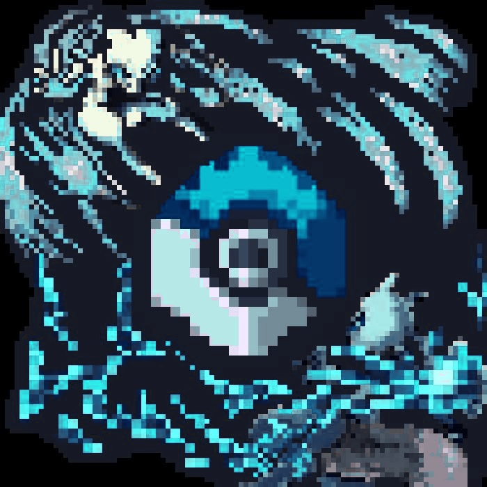

Season 2 · Arctis — Eternal Winter — Minecraft 1.21.1
COBBLEASIA
A Cobblemon world frozen in crystal — 30+ in-house mods, one server. The map is wiped, the fixes are in and the gates are open. Season 2 is live — a clean slate for everyone.
Server News
What's happening
Patch Notes
Latest updates
New features, improvements and fixes — fresh from the dev team.
What's inside
Every system, custom-built
Click any feature to see exactly how it works — step by step, with the commands you'll use.
Ready to play?
Cobblemon 1.21.1 · Fabric. The CobbleAsia modpack is required — Season 2 runs on a custom interface, so grab the pack from Discord first, then connect:
IP
play.cobbleasia.net